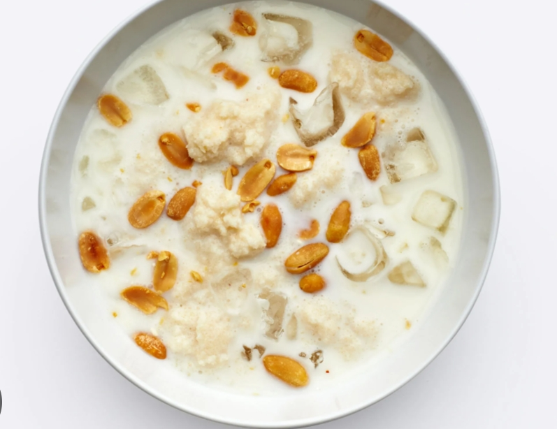

Featured Native Dishes

Jollof Rice
Smoky, rich and unforgettable.

Pounded Yam & Egusi
Traditional Nigerian masterpiece.

Ofada Rice
Served with spicy sauce.

Abacha
Eastern delicacy at its finest.

Yam and Sauce
Yam paired with egg sauce and natural flavors.

Isi Ewu (Nkwobi)
Cow head cooked with enough spice and natural spices.

Puff Puff
Light, fluffy and delicious snack made from yeast dough.

Fried Rice
Delicious and aromatic rice cooked with lots of vegetables.

Cassava Flakes (Garri)
A 7life saving dish, popular in west Africa, made from cassava, milk and sugar.